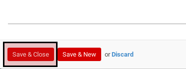

Pengantar
Terminologi
Transaksi
Project
- Penjelasan
- Membuat Project Secara Manual
- Memodifikasi Project
- Menghapus Project
- Menambahkan Tim Proyek
- Menghapus Tim Proyek
- Menambahkan Project Stages
- Menghapus Project Stages
- Membuat Project Melalui Contract
- Membuat Project Melalui Sales Order
- Menyelesaikan Project
Penjelasan
A. BAGIAN HEADER

Project Name
Nama project
Use Tasks
Apabila diaktifkan maka fitur task dapat digunakan pada project
Timesheet
Apabila diaktifkan maka user dapat memilih project tersebut pada entry timesheet detail
Timesheet
Apabila diaktifkan maka fitur issue dapat digunakan pada project
Project Manager
Nama project manager
Customer
Kepemilikan project. Apabila tidak diisi artinya project tersebut merupakan project internal
Project Template
Template project yang digunakan
Email Alias
#TODO
Incoming Email Create
#TODO
Accept Email From
#TODO
B. DESCRIPTION

Description
Deskripsi project
C. TAB TEAM
Teams
Tim yang mengerjakan project
D. TAB OTHER INFO
Privacy/Visibility
Terdapat beberapa pilihan:
- Public Project. Project dan task dapat dilihat oleh semua orang. Pengunjung website juga dapat melihat project berserta task pada website (apabila integrasi dengan website diaktifkan)
- Customer Related Project Project dan task dapat dilihat oleh tim dan konsumen terkait (melalui portal, apabila fitur portal diaktifkan)
- Internal Project Project dan task dapat dilihat oleh tim
- Private Project Project dan task hanya dapat dilihat oleh follower project
Start Date
Abaikan
End Date
Abaikan
Project Escalation
Abaikan
Sequence
Urutan kemunculan project
Currency
Mata uang dasar yang digunakan untuk menghitung cost & revenue project
Parent
Kode biaya induk
E. TAB PROJECT STAGES
Tabel Project Stage
Tahapan-tahapan yang akan digunakan oleh task project
C. TAB SCHEDULE

Timezone
Zona waktu yang digunakan dalam menghitung jadwal project
Start Schedule Based On
Patokan tanggal mulai project. Beberapa opsi dapat yang dapat dipilih:
- Manual. User harus secara manual menentukan tanggal mulai project
- Task Baseline Start. Tanggal mulai akan dihitung dengan berpatokan pada Baseline Start yang dimiliki oleh task yang dipilih pada isian Task Based Schedule
- Task Baseline Finish. Tanggal mulai akan dihitung dengan berpatokan pada Baseline Finish yang dimiliki oleh task yang dipilih pada isian Task Based Schedule
- Project Baseline Start. Tanggal mulai akan dihitung dengan berpatokan pada Baseline Start yang dimiliki oleh project yang dipilih pada isian Project Based Schedule
- Project Baseline Finish. Tanggal mulai akan dihitung dengan berpatokan pada Baseline Finish yang dimiliki oleh project yang dipilih pada isian Project Based Schedule
Project Based Schedule
Project yang akan digunakan sebagai patokan untuk menentukan tanggal mulai project. Hanya muncul apabila isian Start Schedule Based On tidak sama dengan Manual
Task Based Schedule
Task yang akan digunakan sebagai patokan untuk menentukan tanggal mulai project. Hanya muncul apabila isian Start Schedule Based On tidak sama dengan Manual
Baseline Start Offset
Perhitungan penambahan/pengurangan tanggal mulai
Baseline Start Offset UoM
Satuan perhitungan penambahan/pengurangan tanggal mulai
Finish Schedule Based On
Patokan tanggal selesai project. Beberapa opsi dapat yang dapat dipilih:
- Manual. User harus secara manual menentukan tanggal selesai project
- Task Baseline Start. Tanggal selesai akan dihitung dengan berpatokan pada Baseline Start yang dimiliki oleh task yang dipilih pada isian Task Based Schedule
- Task Baseline Finish. Tanggal selesai akan dihitung dengan berpatokan pada Baseline Finish yang dimiliki oleh task yang dipilih pada isian Task Based Schedule
- Project Baseline Start. Tanggal selesai akan dihitung dengan berpatokan pada Baseline Start yang dimiliki oleh project yang dipilih pada isian Project Based Schedule
- Project Baseline Finish. Tanggal selesai akan dihitung dengan berpatokan pada Baseline Finish yang dimiliki oleh project yang dipilih pada isian Project Based Schedule
Project Based Schedule
Project yang akan digunakan sebagai patokan untuk menentukan tanggal selesai project. Hanya muncul apabila isian Finish Schedule Based On tidak sama dengan Manual
Task Based Schedule
Task yang akan digunakan sebagai patokan untuk menentukan tanggal selesai project. Hanya muncul apabila isian Finish Schedule Based On tidak sama dengan Manual
Baseline Finish Offset
Perhitungan penambahan/pengurangan tanggal selesai
Baseline Finish Offset UoM
Satuan perhitungan penambahan/pengurangan tanggal selesai
Membuat Project Secara Manual
A. INPUT
(Tidak ada instruksi khusus)
B. LANGKAH KERJA
- Buka menu Project -> Project -> Projects. Abaikan jika sudah berada pada menu yang dimaksud.
- Klik tombol Create pada bagian atas-kiri form.
- Isi Project Name. Harus diisi.
- Aktifkan Use Task jika dibutuhkan.
- Aktifkan Timesheet jika dibutuhkan.
- Aktifkan Issue jika dibutuhkan.
- Isi Project Manager. Tidak harus diisi.
- Isi Customer. Tidak harus diisi.
- Abaikan Project Template. Tidak harus diisi.
- Isi Email Alias. Tidak harus diisi.
- Pilih Incoming Emails Create. Abaikan jika isian Email Alias kosong.
- Pilih Accept Emails From. Abaikan jika isian Email Alias kosong.
- Buka tab Description
- Isi Description. Tidak harus diisi.
- Buka tab Team
- Tambahkan/Hapus Project Team. Ulangi langkah ini sampai Project Team sesuai dengan keinginan.
- Buka tab Other Info.
- Pilih Privacy/Visibility. Harus diisi.
- Pilih Currency. Tidak harus diisi.
- Pilih Parent. Harus diisi.
- Buka tab Project Stages.
- Tambah/Hapus Project Stages. Ulangi langkah ini sampai Project Stages sesuai keinginan.
- Pilih Timezone. Tidak harus diisi.
- Pilih Start Schedule Based On. Harus diisi. Lanjutkan ke langkah ke-23 apabila isian sama dengan Manual. Lanjutkan ke langkah ke-24 apabila isian tidak sama dengan Manual.
- Isi Manual Baseline Start. Lanjutkan ke langkah ke-28.
- Pilih Project Based Schedule.
- Pilih Task Based Schedule.
- Pilih Baseline Start Offset.
- Pilih Baseline Start Offset UoM.
- Pilih Finish Schedule Based On. Harus diisi. Lanjutkan ke langkah ke-30 apabila isian sama dengan Manual. Lanjutkan ke langkah ke-31 apabila isian tidak sama dengan Manual.
- Isi Manual Baseline Finish. Lanjutkan ke langkah ke-35.
- Pilih Project Based Schedule.
- Pilih Task Based Schedule.
- Pilih Baseline Finish Offset.
- Pilih Baseline Finish Offset UoM.
- Klik tombol Save pada bagian atas-kanan form.

C. OUTPUT
(Tidak ada instruksi khusus)
Memodifikasi Project
A. INPUT
- Data project yang akan dimodifikasi harus mempunyai status In Progress.

B. LANGKAH KERJA
- Buka menu Project -> Project -> Projects. Abaikan jika sudah berada pada menu yang dimaksud.
- Buka data project yang akan dimodifikasi. Abaikan jika data sudah dibuka.
- Klik tombol Edit pada bagian atas-kiri form.

- Isi dan sesuaikan Project Name jika dibutuhkan. Harus diisi.
- Aktifkan Use Task jika dibutuhkan.
- Aktifkan Timesheet jika dibutuhkan.
- Aktifkan Issue jika dibutuhkan.
- Isi dan sesuaikan Project Manager jika dibutuhkan. Tidak harus diisi.
- Isi dan sesuaikan Customer jika dibutuhkan. Tidak harus diisi.
- Abaikan Project Template.
- Isi dan sesuaikan Email Alias jika dibutuhkan. Tidak harus diisi.
- Pilih dan sesuaikan Incoming Emails Create jika dibutuhkan. Abaikan jika isian Email Alias kosong.
- Pilih dan sesuaikan Accept Emails From jika dibutuhkan. Abaikan jika isian Email Alias kosong.
- Buka tab Description
- Isi dan sesuaikan Description jika dibutuhkan. Tidak harus diisi.
- Buka tab Team
- Tambahkan/Hapus Project Team. Ulangi langkah ini sampai Project Team sesuai dengan keinginan.
- Buka tab Other Info.
- Pilih dan sesuaikan Privacy/Visibility jika dibutuhkan. Harus diisi.
- Pilih dan sesuaikan Currency jika dibutuhkan. Tidak harus diisi.
- Pilih dan sesuaikan Parent jika dibutuhkan. Harus diisi.
- Buka tab Project Stages.
- Tambah/Hapus Project Stages. Ulangi langkah ini sampai Project Stages sesuai keinginan.
- Pilih dan sesuaikan Timezone jika dibutuhkan. Tidak harus diisi.
- Pilih dan sesuaikan Start Schedule Based On jika dibutuhkan. Harus diisi. Lanjutkan ke langkah ke-23 apabila isian sama dengan Manual. Lanjutkan ke langkah ke-24 apabila isian tidak sama dengan Manual.
- Isi dan sesuaikan Manual Baseline Start jika dibutuhkan. Lanjutkan ke langkah ke-28.
- Pilih dan sesuaikan Project Based Schedule.
- Pilih dan sesuaikan Task Based Schedule jika dibutuhkan.
- Pilih dan sesuaikan Baseline Start Offset jika dibutuhkan.
- Pilih dan sesuaikan Baseline Start Offset UoM jika dibutuhkan.
- Pilih dan sesuaikan Finish Schedule Based On jika dibutuhkan. Harus diisi. Lanjutkan ke langkah ke-30 apabila isian sama dengan Manual. Lanjutkan ke langkah ke-31 apabila isian tidak sama dengan Manual.
- Isi dan sesuaikan Manual Baseline Finish jika dibutuhkan. Lanjutkan ke langkah ke-35.
- Pilih dan sesuaikan Project Based Schedule jika dibutuhkan.
- Pilih dan sesuaikan Task Based Schedule jika dibutuhkan.
- Pilih dan sesuaikan Baseline Finish Offset jika dibutuhkan.
- Pilih dan sesuaikan Baseline Finish Offset UoM jika dibutuhkan.
- Klik tombol Save pada bagian atas-kanan form.
C. OUTPUT
- Data project akan terbuat dengan status In Progress
Menghapus Project
A. INPUT
- Data project yang akan dimodifikasi harus mempunyai status In Progress.
B. LANGKAH KERJA
- Buka menu Project -> Project -> Projects. Abaikan jika sudah berada pada menu yang dimaksud.
- Buka data project yang akan dimodifikasi. Abaikan jika data sudah dibuka.
- Klik tombol More pada bagian atas-tengah form.

- Klik tombol Delete pada drop-down yang muncul pada tombol More.

- Klik Ok pada diaalog konfirmasi penghapusan.

C. OUTPUT
- Data project akan terhapus.
Menambahkan Tim Proyek
(Instruksi kerja ini merupakan sub instruksi dari (1) Membuat Project Secara Manual, atau (2) Memodifikasi Project. Instruksi kerja ini tidak bisa berdiri sendiri)
A. INPUT
(Tidak ada instruksi khusus)
B. INSTRUKSI KERJA
- Klik tombol Add pada bagian atas-kiri tabel Team.

Pop-up Project Member akan muncul

- Seleksi data tim.
- Klik tombol Select pada bagian bawah-kiri pop-up Project Member.
- Lanjutkan ke langkah ke-15 prosedur Menambah Manual Project
C. OUTPUT
(Tidak ada instruksi khusus)
Menghapus Tim Proyek
(Instruksi kerja ini merupakan sub instruksi dari (1) Membuat Project Secara Manual, atau (2) Memodifikasi Project. Instruksi kerja ini tidak bisa berdiri sendiri)
A. INPUT
(Tidak ada instruksi khusus)
B. INSTRUKSI KERJA
- Klik icon x pada bagian pojok atas-kanan kotak yang berisi nama anggota tim
- Ulangi langkah ke-1 untuk setiap anggota tim yang akan dihapus.
- Lanjutkan langkah ke-14 instruksi Menambahkan Project Secara Manual.
C. OUTPUT
(Tidak ada instruksi khusus)
Menambahkan Project Stages
(Instruksi kerja ini merupakan sub instruksi dari (1) Membuat Project Secara Manual, atau (2) Memodifikasi Project. Instruksi kerja ini tidak bisa berdiri sendiri)
A. INPUT
(Tidak ada instruksi khusus)
B. INSTRUKSI KERJA
- Klik tombol Add an Item pada bagian bawah-kiri tabel Project Stages
Pop-up Task Stages akan muncul
- Pilih task stage akan akan digunakan
- Klik tombol Select pada bagian bawah-kiri pop-up Task Stages.

- Lanjutkan ke langkah ke-21 prosedur Menambah Manual Project
C. OUTPUT
(Tidak ada instruksi khusus)
Menghapus Project Stages
(Instruksi kerja ini merupakan sub instruksi dari (1) Membuat Project Secara Manual, atau (2) Memodifikasi Project. Instruksi kerja ini tidak bisa berdiri sendiri)
A. INPUT
(Tidak ada instruksi khusus)
B. INSTRUKSI KERJA
- Klik icon tempat sampah pada bagian kanan data project stages yang akan dihapus.

- Ulangi langkah ke-1 untuk setiap project stage yang akan dihapus.
- Lanjutkan langkah ke-20 instruksi Menambahkan Project Secara Manual.
C. OUTPUT
(Tidak ada instruksi khusus)
Melalui Contract
Melalui Sales Order
Menyelesaikan Project
A. INPUT
- Data project yang akan diselesaikan harus mempunyai status In Progress.
B. LANGKAH KERJA
- Buka menu Project -> Project -> Projects. Abaikan jika sudah berada pada menu yang dimaksud.
- Buka data project yang akan diselesaikan. Abaikan jika data sudah dibuka.
- Klik tombol Close Project pada bagian atas-kiri form.
C. OUTPUT
- Status dari project akan berubah menjadi Closed.

Membuka Kembali Project
A. INPUT
- Data project yang akan dibuka kembali tidak boleh memiliki status In Progress.
B. LANGKAH KERJA
- Buka menu Project -> Project -> Projects. Abaikan jika sudah berada pada menu yang dimaksud.
- Buka data project yang akan dibuka kembali. Abaikan jika data sudah dibuka.
- Klik tombol Re-Open Project pada bagian atas-kiri form.

C. OUTPUT
- Status dari project akan berubah menjadi In Progress.
Membatalkan Project
A. INPUT
- Data project yang akan dibatalkan harus mempunyai status In Progress.
B. LANGKAH KERJA
- Buka menu Project -> Project -> Projects. Abaikan jika sudah berada pada menu yang dimaksud.
- Buka data project yang akan dibatalkan. Abaikan jika data sudah dibuka.
- Klik tombol Cancel Project pada bagian atas-kiri form.

C. OUTPUT
- Status dari project akan berubah menjadi Cancelled.
Task
Penjelasan
A. BAGIAN HEADER

Task Summary
Penjelasan singkat task
Template
Template task yang digunakan
Category
Kategori task
Project
Project yang memiliki task tersebut
Assigned To
User yang ditugaskan untuk menyelesaikan task
Reviewer
User yang ditugaskan untuk mereview penyelesaian task
Deadline
Abaikan
Tags
Penggolongan task
B. TAB DESCRIPTION

Description
Penjelasan task
B.1. Tabel Timesheet
Tabel timesheet akan berisi detail pengerjaan dan waktu pengerjaan task
Description
Deskripsi pengerjaan
Quantity
Jumlah jam yang digunakan (format HH:MM)
Date
Tanggal timesheet dilakukan
Invoiceable
Opsi untuk (1) menentukan apakah waktu pengerjaan dapat diinvoice ke konsumen/klien, (2) menentukan berapa proporsi waktu yang dapat diinvoice ke konsumen/klien.
C. TAB EXTRA INFO

Priority
Prioritas task
Customer
(Abaikan)
Order Line
(Abaikan)
Sequence
Urutan task
State
Status dari task. Berikut adalah beberapa status yang dapat terjadi:
- Draft. Task belum mulai dikerjakan.
- On Progress. Task sedang dikerjakan.
- Done. Task sudah selesai.
- Pending. Task sudah mulai dikerjakan namun pengerjaannya sedang dipending.
- Cancel. Task sudah dibatalkan.
Company
Pemilik task
Last Stage Update
Waktu terakhir task berubah stage
D. TAB SCHEDULE

Timezone
Zona waktu yang digunakan dalam menghitung jadwal
Start Schedule Based On
Patokan tanggal mulai task. Beberapa opsi dapat yang dapat dipilih:
- Manual. User harus secara manual menentukan tanggal mulai task
- Task Baseline Start. Tanggal mulai akan dihitung dengan berpatokan pada Baseline Start yang dimiliki oleh task yang dipilih pada isian Task Based Schedule
- Task Baseline Finish. Tanggal mulai akan dihitung dengan berpatokan pada Baseline Finish yang dimiliki oleh task yang dipilih pada isian Task Based Schedule
- Project Baseline Start. Tanggal mulai akan dihitung dengan berpatokan pada Baseline Start yang dimiliki oleh project yang dipilih pada isian Project Based Schedule
- Project Baseline Finish. Tanggal mulai akan dihitung dengan berpatokan pada Baseline Finish yang dimiliki oleh project yang dipilih pada isian Project Based Schedule
Project Based Schedule
Project yang akan digunakan sebagai patokan untuk menentukan tanggal mulai task. Hanya muncul apabila isian Start Schedule Based On tidak sama dengan Manual
Task Based Schedule
Task yang akan digunakan sebagai patokan untuk menentukan tanggal mulai project. Hanya muncul apabila isian Start Schedule Based On tidak sama dengan Manual
Baseline Start Offset
Perhitungan penambahan/pengurangan tanggal mulai
Baseline Start Offset UoM
Satuan perhitungan penambahan/pengurangan tanggal mulai
Finish Schedule Based On
Patokan tanggal selesai task. Beberapa opsi dapat yang dapat dipilih:
- Manual. User harus secara manual menentukan tanggal selesai project
- Task Baseline Start. Tanggal selesai akan dihitung dengan berpatokan pada Baseline Start yang dimiliki oleh task yang dipilih pada isian Task Based Schedule
- Task Baseline Finish. Tanggal selesai akan dihitung dengan berpatokan pada Baseline Finish yang dimiliki oleh task yang dipilih pada isian Task Based Schedule
- Project Baseline Start. Tanggal selesai akan dihitung dengan berpatokan pada Baseline Start yang dimiliki oleh project yang dipilih pada isian Project Based Schedule
- Project Baseline Finish. Tanggal selesai akan dihitung dengan berpatokan pada Baseline Finish yang dimiliki oleh project yang dipilih pada isian Project Based Schedule
Project Based Schedule
Project yang akan digunakan sebagai patokan untuk menentukan tanggal selesai task. Hanya muncul apabila isian Finish Schedule Based On tidak sama dengan Manual
Task Based Schedule
Task yang akan digunakan sebagai patokan untuk menentukan tanggal selesai project. Hanya muncul apabila isian Finish Schedule Based On tidak sama dengan Manual
Baseline Finish Offset
Perhitungan penambahan/pengurangan tanggal selesai
Baseline Finish Offset UoM
Satuan perhitungan penambahan/pengurangan tanggal selesai
E. TAB DEPENDENCIES
E.1 TABEL PREDECESSOR
Tabel predecessor akan berisi tugas-tugas (task) yang pelaksanaannya mendahului task terkait.

Predecessor Task
Task pendahulu
Dependency Type
Jenis hubungan dengan predecessor. Terdapat beberapa jenis hubungan yang dapat dipilih:
- Start-To-Finish. Predecessor harus dimulai terlebih dahulu sebelum task dapat diselesaikan.
- Start-To-Start. Predecessor harus dimulai terlebih dahulu sebelum task dapat dimulai.
- Finish-To-Start. Predecessor harus diselesaikan terlebih dahulu sebelum task dapat dimulai.
- Finish-To-Finish. Predecessor harus diselesaikan terlebih dahulu sebelum task dapat diselesaikan.
Task Stage
Stage dari task pendahulu
Task State
State dari task pendahulu
E.1 TABEL SUCESSOR
Tabel predecessor akan berisi tugas-tugas (task) yang pelaksanaannya didahului oleh task terkait.
Successor Task
Task lanjutan
Dependency Type
Jenis hubungan dengan sucessor. Terdapat beberapa jenis hubungan yang dapat dipilih:
- Start-To-Finish. Task harus dimulai terlebih dahulu sebelum predecessor dapat diselesaikan.
- Start-To-Start. Task harus dimulai terlebih dahulu sebelum predecessor dapat dimulai.
- Finish-To-Start. Task harus diselesaikan terlebih dahulu sebelum predecessor dapat dimulai.
- Finish-To-Finish. Task harus diselesaikan terlebih dahulu sebelum predecessor dapat diselesaikan.
Task Stage
Stage dari task lanjutan
Task State
State dari task lanjutan
F. TAB QUALITY CONTROL

QC Passed?
QC Passed akan bernilai True apabila semua pertanyaan pada tabel quality control lolos uji (ditandai dengan nilai True pada field Success). Bernilai False apabila salah satu pertanyaan pada tabel quality control tidak lolos uji (ditandai dengan nilai False pada field Success)
F.1 TABEL QUALITY CONTROL
Tabel quality control akan berisi item-item pengujian yang dibutuhkan agar task dapat diselesaikan.
Question
Pertanyaan yang akan diuji
Type
Tipe item pengujian, yaitu:
- Quantitative: User harus menyediakan jawaban atas pertanyaan yang akan diuji dalam bentuk angka.
- Qualitative: User harus memilih jawaban atas pertanyaan yang akan diuji.
Qualitative Value
Jawaban dari pertanyaan (jika isian Type sama dengan Qualitative)
Quantitative Value
Jawaban dari pertanyaan (jika isian Type sama dengan Quantitative)
Valid Value
Jawaban yang dibutuhkan agar item pengujian lolos uji
Success?
Bernilai True apabila jawaban (Qualitative Value atau Quantitative Value, tergantung Type) sesuai dengan Valid Value
G. TAB INSTRUCTION

G.1 TABEL INSTRUCTION
Instruction
Instruction URL
Membuat Task
A. INPUT
(Tidak ada petunjuk khusus)
B. INSTRUKSI KERJA
- Buka menu Project -> Project -> Projects. Abaikan jika sudah berada pada menu yang dimaksud.
- Buka data project yang akan dibuatkan tasknya. Abaikan jika data sudah dibuka.
- Klik tombol Tasks pada bagian atas-kanan form. Tampilan akan berubah ke kanban task.

- Klik tombol Create pada bagian atas-kiri form.
- Isi Task Summary. Harus diisi.
- Pilih Template. Tidak harus diisi.
- Pilih dan sesuaikan Category. Tidak harus diisi.
- Pilih dan sesuaikan Assigned To. Harus diisi.
- Pilih dan sesuaikan Reviewer. Harus diisi.
- Pilih Tags. Tidak harus diisi.
- Buka tab Description.
- Isi Description. Tidak harus diisi.
- Buka tab Extra Info.
- Sesuaikan Priority. Tidak harus diisi.
- Isi dan sesuaikan Sequence. Tidak harus diisi.
- Buka tab Schedule.
- Pilih Start Schedule Based On. Harus diisi. Lanjutkan ke langkah ke-18 apabila isian sama dengan Manual. Lanjutkan ke langkah ke-19 apabila isian tidak sama dengan Manual.
- Isi Manual Baseline Start. Lanjutkan ke langkah ke-22.
- Pilih Task Based Schedule. Harus diisi.
- Pilih Baseline Start Offset. Harus diisi.
- Pilih Baseline Start Offset UoM. Harus diisi.
- Pilih Finish Schedule Based On. Harus diisi. Lanjutkan ke langkah ke-23 apabila isian sama dengan Manual. Lanjutkan ke langkah ke-24 apabila isian tidak sama dengan Manual.
- Isi Manual Baseline Finish. Lanjutkan ke langkah ke-27.
- Pilih Task Based Schedule. Harus diisi.
- Pilih Baseline Finish Offset. Harus diisi.
- Pilih Baseline Finish Offset UoM. Harus diisi.
- Buka tab Dependency.
- Tambah/Modifikasi/Hapus Predecessor. Tidak harus diisi. Lakukan sampai Predecessor sesuai dengan keinginan.
- Klik tombol Save pada bagian atas-kiri form.

C. OUTPUT
- Data task akan terbuat
Memodifikasi Task
A. INPUT
(Tidak ada petunjuk khusus)
B. INSTRUKSI KERJA
- Buka menu Project -> Project -> Projects. Abaikan jika sudah berada pada menu yang dimaksud.
- Buka data project yang akan dibuatkan tasknya. Abaikan jika data sudah dibuka.
- Klik tombol Tasks pada bagian atas-kanan form. Tampilan akan berubah ke kanban task.
- Buka data task yang akan dimodifikasi. Abaikan jika data task sudah dibuka.
- Klik tombol Edit pada bagian atas-kiri form.

- Isi dan sesuaikan Task Summary. Harus diisi.
- Pilih dan sesuaikan Template. Tidak harus diisi.
- Pilih dan sesuaikan Category. Tidak harus diisi.
- Pilih dan sesuaikan Assigned To. Harus diisi.
- Pilih dan sesuaikan Reviewer. Harus diisi.
- Pilih dan sesuaikan Tags. Tidak harus diisi.
- Buka tab Description.
- Isi dan sesuaikan Description. Tidak harus diisi.
- Buka tab Schedule.
- Sesuaikan Priority. Tidak harus diisi.
- Isi dan sesuaikan Sequence. Tidak harus diisi.
- Buka tab Schedule.
- Pilih dan sesuaikan Start Schedule Based On. Harus diisi. Lanjutkan ke langkah ke-18 apabila isian sama dengan Manual. Lanjutkan ke langkah ke-19 apabila isian tidak sama dengan Manual.
- Isi dan sesuaikan Manual Baseline Start. Lanjutkan ke langkah ke-23.
- Pilih dan sesuaikan Task Based Schedule. Harus diisi.
- Pilih dan sesuaikan Baseline Start Offset. Harus diisi.
- Pilih dan sesuaikan Baseline Start Offset UoM. Harus diisi.
- Pilih dan sesuaikan Finish Schedule Based On. Lanjutkan ke langkah ke-23 apabila isian sama dengan Manual. Lanjutkan ke langkah ke-24 apabila isian tidak sama dengan Manual.
- Isi dan sesuaikan Manual Baseline Finish. Lanjutkan ke langkah ke-28.
- Pilih dan sesuaikan Task Based Schedule. Harus diisi.
- Pilih dan sesuaikan Baseline Finish Offset. Harus diisi.
- Pilih dan sesuaikan Baseline Finish Offset UoM. Harus diisi.
- Buka tab Dependencies.
- Tambah/Modifikasi/Hapus Predecessor. Tidak harus diisi. Lakukan sampai Predecessor sesuai dengan keinginan.
- Klik tombol Save pada bagian atas-kiri form.
C. OUTPUT
- Data task akan berubah sesuai dengan modifikasi yang dibuat
Menambahkan Task Predecessors
A. INPUT
(Instruksi kerja ini merupakan sub instruksi dari (1) Membuat Task, atau (2) Memodifikasi Task. Instruksi kerja ini tidak bisa berdiri sendiri)
B. INSTRUKSI KERJA
- Buka tab Dependencies.
- Klik tombol Add an Item pada tabel Predecessor
- Pilih Predecessor Task. Harus diisi.
- Pilih Dependency Type. Harus diisi.
- Lanjutkan ke langkah ke-28 prosedur Membuat Task atau langkah ke-29 Prosedur Memodifikasi Task
C. OUTPUT
(Tidak ada instruksi khusus)
Memodifikasi Task Predecessors
A. INPUT
(Instruksi kerja ini merupakan sub instruksi dari (1) Membuat Task, atau (2) Memodifikasi Task. Instruksi kerja ini tidak bisa berdiri sendiri)
B. INSTRUKSI KERJA
- Buka tab Dependencies.
- Klik data predecessor yang akan dimodifikasi.
- Pilih dan sesuaikan Predecessor Task. Harus diisi.
- Pilih dan sesuaikan Dependency Type. Harus diisi.
- Lanjutkan ke langkah ke-28 prosedur Membuat Task atau langkah ke-29 Prosedur Memodifikasi Task
C. OUTPUT
(Tidak ada instruksi khusus)
Menghapus Task Predecessors
(Instruksi kerja ini merupakan sub instruksi dari (1) Membuat Task, atau (2) Memodifikasi Task. Instruksi kerja ini tidak bisa berdiri sendiri)
B. INSTRUKSI KERJA
- Buka tab Dependencies.
- Klik icon tempat sampah pada bagian kanan data predecessor yang akan dihapus

- Lanjutkan ke langkah ke-28 prosedur Membuat Task atau langkah ke-29 Prosedur Memodifikasi Task
C. OUTPUT
(Tidak ada instruksi khusus)
Memulai Task
Menyelesaikan Task
Membatalkan Task
Issue
Konfigurasi
Task Stage
HEADER

Stage Name
Nama Stage(Tahapan) dari project
Sequence
No. Urut
Default for New Projects
Jika dicentang, Stage(Tahapan) secara default akan terbuat apabila terdapat projek baru.
Folded in Kanban View
Jika dicentang, Stage(Tahapan) pada kanban view akan secara otomatis di-Fold(Dilipat/ditutup)
Description
Deskripsi Stage(Tahapan)
Project Template
Penjelasan Project Template
Informasi pada Template Proyek dibagi menjadi beberapa area, diantaranya:
HEADER
Template Name
Nama template proyek
Active
Sebagai penanda apakah data adalah aktif/non-aktif
Parent Project
Parent/Induk Proyek
Privacy Visibility
Terbagi atas 3 pilihan, yaitu:
- Public: Jika dipilih, maka proyek akan bersifat publik
- Employees: Jika dipilih, maka proyek hanya dapat diakses oleh karyawan saja
- Followers: Jika dipilih, maka proyek hanya dapat diakses oleh Followers saja
Tab Task Stages
Task Stages
Mendefinisikan Task Stage
Tab Task Templates

Informasi pada Tab Task Templates dibagi menjadi beberapa area, diantaranya:
Tab Task Templates: Header
Template Name
Nama template tugas
Active
Sebagai penanda apakah data adalah aktif/non-aktif
Sequence
No. Urut
Category
Mendefiniskan kategori tugas
Assigned To
Mendefiniskan User(Pengguna) yang akan ditugaskan
Reviewer
Mendefiniskan User(Pengguna) yang akan menjadi Reviewer(peninjau) tugas
Tab Task Templates: Tab Note
Note
Catatan tambahan terkait Task Template
Tab Task Templates: Tab Schedule
Start Schedule Based On
Mendefinisikan dasar akan dimulainya Schedule: Terbagi atas 5 pilihan, yaitu:
- Manual
- Task Baseline Start
- Task Baseline Finish
- Project Baseline Start
- Project Baseline Finish
Finish Schedule Based On
Mendefinisikan dasar akan berakhirnya Schedule: Terbagi atas 5 pilihan, yaitu:
- Manual
- Task Baseline Start
- Task Baseline Finish
- Project Baseline Start
- Project Baseline Finish
Tab Task Templates: Tab Dependencies
PREDECESSOR
Predecessor Task
Mendefinisikan Predecessor Task
Dependency Type
Tipe Dependency. Terbagi atas 4 pilihan, yaitu:
- Start-To-Finish
- Start-To-Start
- Finish-To-Start
- Finish-To-Finish
SUCESSOR
Sucessor Task
Mendefinisikan Sucessor Task
Dependency Type
Tipe Dependency. Terbagi atas 4 pilihan, yaitu:
- Start-To-Finish
- Start-To-Start
- Finish-To-Start
- Finish-To-Finish
Tab Note

Note
Catatan tambahan terkait Project Template
Membuat Project Template
A. INPUT
(Tidak ada instruksi khusus)
B. LANGKAH KERJA
- Buka menu Project -> Configuration -> Project Template. Abaikan jika menu sudah dibuka.
- Klik tombol Create pada bagian atas-kiri form.

- Isi Template Name. Harus diisi.
- Aktifkan Active.
- Pilih Parent Project. Harus diisi.
- Pilih Privacy Visibility. Harus diisi.
- Buka tab Task Stages.
- Tambah/Hapus Project Stages. Ulangi langkah ini sampai Project Stages sesuai keinginan.
- Buka tab Task Template.
- Tambah/Modifikasi/Hapus tabel Task Template. Ulangi langkah ini sampai tabel Task Template sesuai dengan keinginan.
- Buka tab Note
- Isi Note. Tidak harus diisi.
- Klik tombol Save pada bagian atas-kiri form.
C. OUTPUT
- Data project template akan terbuat.
Memodifikasi Project Template
A. INPUT
(Tidak ada instruksi khusus)
B. LANGKAH KERJA
- Buka menu Project -> Configuration -> Project Template. Abaikan jika menu sudah dibuka.
- Buka data project template yang akan dimodifikasi. Abaikan jika data sudah dibuka.
- Klik tombol Edit pada bagian atas-kiri form.

- Isi dan sesuaikan Template Name jika dibutuhkan. Harus diisi.
- Pilih dan sesuaikan Parent Project jika dibutuhkan. Harus diisi.
- Pilih dan sesuaikan Privacy Visibility jika dibutuhkan. Harus diisi.
- Buka tab Task Stages.
- Tambah/Hapus Project Stages. Ulangi langkah ini sampai Project Stages sesuai keinginan.
- Buka tab Task Template.
- Tambah/Modifikasi/Hapus tabel Task Template. Ulangi langkah ini sampai tabel Task Template sesuai dengan keinginan.
- Buka tab Note
- Isi dan sesuaikan Note jika dibutuhkan. Tidak harus diisi.
- Klik tombol Save pada bagian atas-kiri form.
C. OUTPUT
- Data project template akan berubah sesuai dengan keinginan.
Menghapus Project Template
A. INPUT
(Tidak ada instruksi khusus)
B. LANGKAH KERJA
- Buka menu Project -> Configuration -> Project Template. Abaikan jika sudah berada pada menu yang dimaksud.
- Buka data project template yang akan dihapus. Abaikan jika data sudah dibuka.
- Klik tombol More pada bagian atas-tengah form.

- Klik tombol Delete pada drop-down yang muncul pada tombol More.
- Klik Ok pada diaalog konfirmasi penghapusan.

C. OUTPUT
- Data project template akan terhapus.
Menambahkan Task Template
(Instruksi kerja ini merupakan sub instruksi dari (1) Membuat Project Template, atau (2) Memodifikasi Project Template. Instruksi kerja ini tidak bisa berdiri sendiri)
A. INPUT
(Tidak ada instruksi khusus)
B. LANGKAH KERJA
- Buka tab Task Templates.
- Klik tombol Add an Item pada tabel Task Template.

- Pop-up Task Template akan muncul.

- Isi Task Template. Harus diisi.
- Aktifkan Active.
- Isi Sequence. Harus diisi.
- Pilih Category. Tidak harus diisi.
- Pilih Assigned To. Tidak harus diisi.
- Pilih Reviewer. Tidak harus diisi.
- Buka tab Notes.
- Isi Notes. Tidak harus diisi.
- Buka tab Dependencies.
- Tambah/Modifikasi/Hapus Task Dependency. Ulangi langkah ini sampai tabel Task Dependency sesuai keinginan.
- Buka tab Schedule
- Pilih Start Schedule Based On. Harus diisi. Lanjutkan ke langkah ke-16 apabila isian sama dengan Manual. Lanjutkan ke langkah ke-17 apabila isian tidak sama dengan Manual. Harus diisi.
- Isi Manual Baseline Start. Lanjutkan ke langkah ke-20. Harus diisi.
- Pilih Task Based Schedule. Harus diisi.
- Pilih Baseline Start Offset. Harus diisi.
- Pilih Baseline Start Offset UoM. Harus diisi.
- Pilih Finish Schedule Based On. Harus diisi. Lanjutkan ke langkah ke-21 apabila isian sama dengan Manual. Lanjutkan ke langkah ke-22 apabila isian tidak sama dengan Manual.
- Isi Manual Baseline Finish. Lanjutkan ke langkah ke-35. Harus diisi.
- Pilih Task Based Schedule. Harus diisi.
- Pilih Baseline Finish Offset. Harus diisi.
- Pilih Baseline Finish Offset UoM. Harus diisi.
- Klik tombol Save & New atau Save & Close.

- Ulangi langkah ke-4 jika tombol Save & New yang dipilih pada langkah ke-25. Lanjutkan langkah ke-10 instruksi kerja Membuat Task template atau langkah ke-10 instruksi kerja Memodifikasi task Template.
C. OUTPUT
(Tidak ada instruksi khusus)
Memodifikasi Task Template
(Instruksi kerja ini merupakan sub instruksi dari (1) Membuat Project Template, atau (2) Memodifikasi Project Template. Instruksi kerja ini tidak bisa berdiri sendiri)
A. INPUT
(Tidak ada instruksi khusus)
B. LANGKAH KERJA
- Buka tab Task Templates.
- Buka data task template yang akan dimodifikasi.
- Pop-up Task Template akan muncul.
- Isi dan sesuaikan Task Template jika dibutuhkan. Harus diisi.
- Aktifkan Active.
- Isi dan sesuaikan Sequence jika dibutuhkan. Harus diisi.
- Pilih dan sesuaikan Category jika dibutuhkan. Tidak harus diisi.
- Pilih dan sesuaikan Assigned To jika dibutuhkan. Tidak harus diisi.
- Pilih dan sesuaikan Reviewer jika dibutuhkan. Tidak harus diisi.
- Buka tab Notes.
- Isi dan sesuaikan Notes jika dibutuhkan. Tidak harus diisi.
- Buka tab Dependencies.
- Tambah/Modifikasi/Hapus Task Dependency. Ulangi langkah ini sampai tabel Task Dependency sesuai keinginan.
- Buka tab Schedule
- Pilih dan sesuaikan Start Schedule Based On jika dibutuhkan. Harus diisi. Lanjutkan ke langkah ke-16 apabila isian sama dengan Manual. Lanjutkan ke langkah ke-17 apabila isian tidak sama dengan Manual. Harus diisi.
- Isi dan sesuaikan Manual Baseline Start jika dibutuhkan. Lanjutkan ke langkah ke-20. Harus diisi.
- Pilih dan sesuaikan Task Based Schedule jika dibutuhkan. Harus diisi.
- Pilih dan sesuaikan Baseline Start Offset jika dibutuhkan. Harus diisi.
- Pilih dan sesuaikan Baseline Start Offset UoM jika dibutuhkan. Harus diisi.
- Pilih dan sesuaikan Finish Schedule Based On jika dibutuhkan. Harus diisi. Lanjutkan ke langkah ke-21 apabila isian sama dengan Manual. Lanjutkan ke langkah ke-22 apabila isian tidak sama dengan Manual.
- Isi dan sesuaikan Manual Baseline Finish jika dibutuhkan. Lanjutkan ke langkah ke-35. Harus diisi.
- Pilih dan sesuaikan Task Based Schedule jika dibutuhkan. Harus diisi.
- Pilih dan sesuaikan Baseline Finish Offset jika dibutuhkan. Harus diisi.
- Pilih dan sesuaikan Baseline Finish Offset UoM jika dibutuhkan. Harus diisi.
- Klik tombol Save pada bagian bawah-kiri form. Lanjutkan langkah ke-10 instruksi kerja Membuat Task template atau langkah ke-10 instruksi kerja Memodifikasi task Template.

C. OUTPUT
(Tidak ada instruksi khusus)
Menghapus Task Template
(Instruksi kerja ini merupakan sub instruksi dari (1) Membuat Project Template, atau (2) Memodifikasi Project Template. Instruksi kerja ini tidak bisa berdiri sendiri)
A. INPUT
(Tidak ada instruksi khusus)
B. LANGKAH KERJA
- Buka tab Task Templates.
- Klik icon tempat sampah pada bagian kanan data task template yang akan dihapus.

- Lanjutkan langkah ke-10 instruksi kerja Membuat Task template atau langkah ke-10 instruksi kerja Memodifikasi task Template.
C. OUTPUT
- Data task template akan terhapus.
Menambahkan Task Template Dependency
Memodifikasi Task Template Dependency
Menghapus Task Template Dependency
Membuat Project Dari Project Template
A. INPUT
(Tidak ada instruksi khusus)
B. LANGKAH KERJA
- Buka menu Project -> Configuration -> Project Template. Abaikan jika menu sudah dibuka.
- Buka data project template yang akan dimodifikasi. Abaikan jika data sudah dibuka.
- Klik tombol Create Project pada bagian atas-kiri form.
- Pop-up Create Project From Template akan muncul.

- Isi Project Name. Tidak harus diisi.
- Pilih Parent Project. Tidak harus diisi.
- Pilih Customer. Tidak harus diisi.
- Klik tombol Generate Project pada bagian bawah-kiri pop-up Create Project From Template
C. OUTPUT
- Data project akan terbuat sesuai dengan project template yang digunakan.
Tag
HEADER

Name
Nama Tag
Task Category
Informasi pada Task Category dibagi menjadi beberapa area, diantaranya:
HEADER
Name
Nama Task Category
TAB QUALITY CONTROL


Question
Mendefinisikan pertanyaan yang akan diberikan pada saat melakukan Quality Control
Sequence
No. Urut
Type
Tipe Quality Control. Terbagi atas 2 pilihan, yaitu:
- Qualitative
- Quantitative
Note
Catatan tambahan
TAB INSTRUCTIONS

Instruction
Nama instruksi
Instruction URL
Alamat URL instruksi